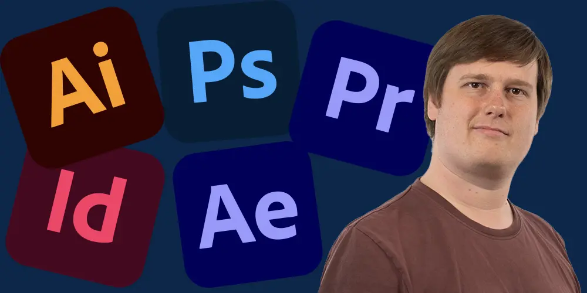

Welcome to StaalMedie

Do you need someone to edit your videos? Do you feel like your website isn't grabbing people enough? Perhaps you want to bolster your online presence?
My name is Mads Staal Andersen of StaalMedie, and I offer the services you'll need to grab your audience's attention and keep it. Let the world see your passion!